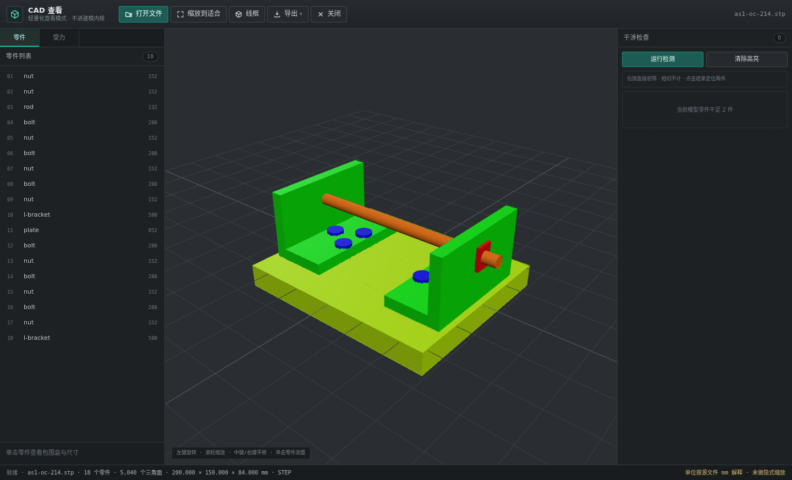
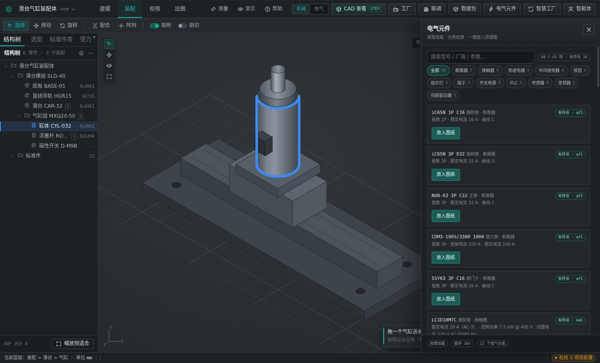
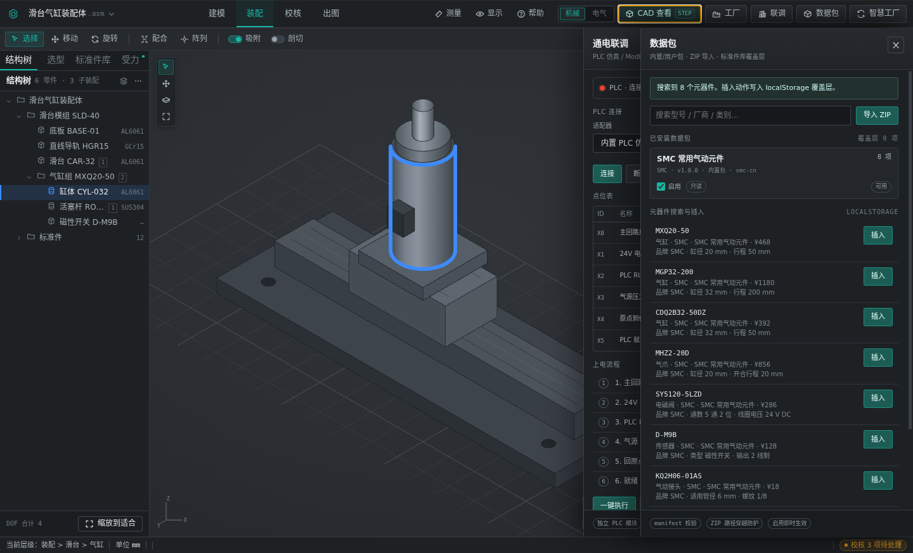
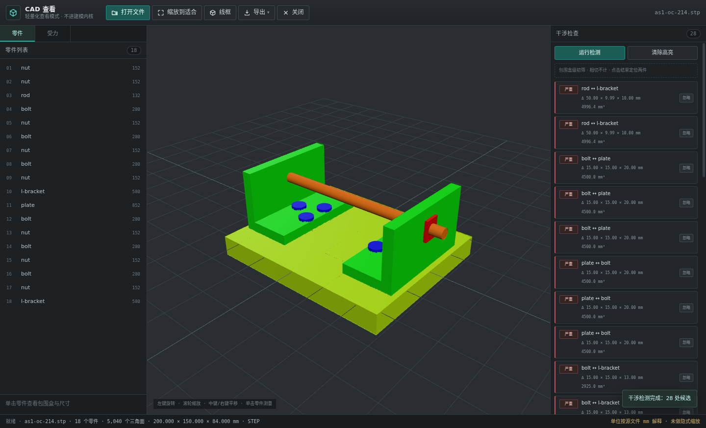
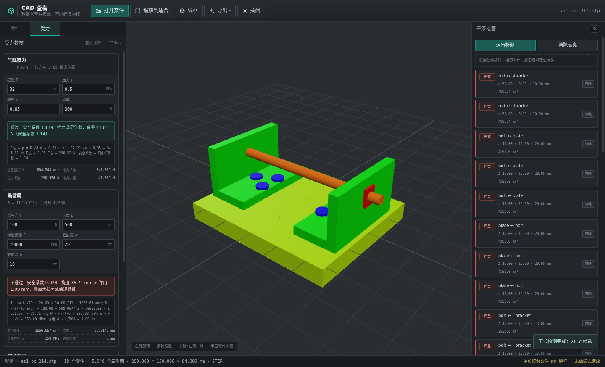
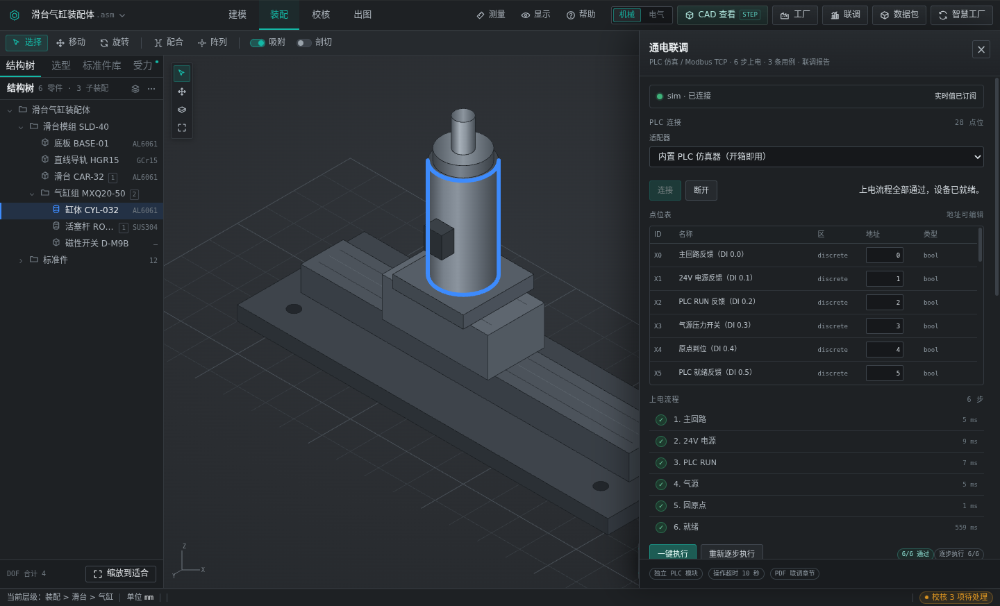
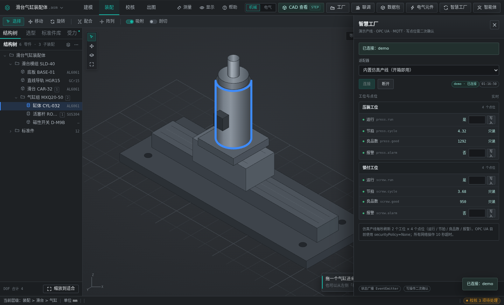
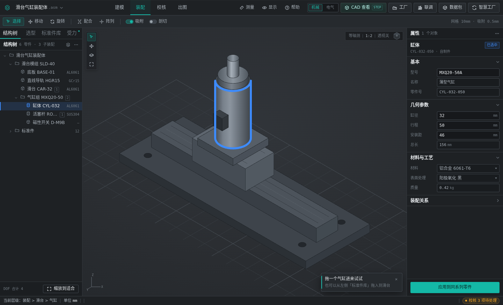
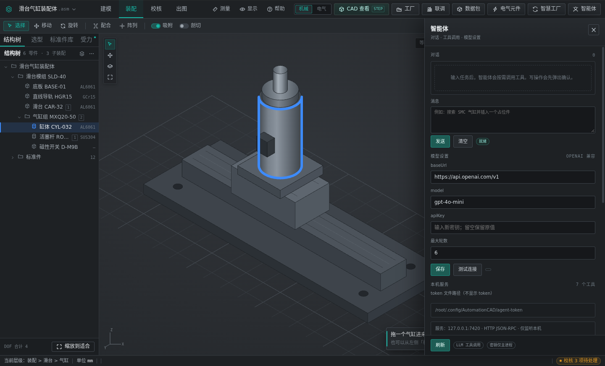

Executive Summary
项目已完成从网页原型到 Windows 桌面软件的升级，并首次打通设计端到智慧工厂的数据链路。当前状态：桌面端功能可用、自动化测试全绿、设计同步接口双方联调通过；下一阶段的增量价值集中在自然语言交互、PLC 程序自动生成与委外加工协同。
| # | 结论 | 依据 |
|---|---|---|
| 1 | 设计端已形成闭环，可直接试用 | 五个域全部落地：CAD 导入与运动学标注、电气元件库与底板布置、电气合规校验与功率统计、机械干涉与受力、成本自动统计、PLC 联调与故障诊断。工程导出一套产物（A3 PDF / DXF / GLB / BOM / 成本）。 |
| 2 | 设计到生产的数据链路已打通 | 设计包经 /api/v1/design-sync/* 直传智慧工厂：机器鉴权 X-Design-Key、zip SHA-256 幂等去重、版本 diff 与绑定。对方 0.22.0 已实现，30 项后端测试通过。 |
| 3 | 选型、校验、成本从事后前移到设计时 | 元件带真实尺寸，布置时 1 mm 吸附与重叠标红；线号与载流量在设计阶段即校验；BOM 直接乘阶梯价出成本，缺价项单列待询价，不再等报价回来才发现超预算。 |
| 4 | 下一步价值在自动化与外部协同 | P7 自然语言 Agent（15 工具、写操作确认、审计）、P8 PLC 程序自动生成（ST 代码 + IO 变量表 + 预检）、P9 委外加工数据智能系统联动，三项均在规划中，已有设计与工具集基础。 |
Why · Problem
非标自动化的交付节奏是"一单一设计"，每个项目都要重画一遍、重算一遍、重编一遍。工具链却是割裂的：CAD 出图、Excel 记 BOM、经验选型、事后核价、PLC 手工编程。割裂的成本不在软件采购，而在每一次人工转录与每一次返工。
| 痛点 | 现状做法 | 造成的后果 |
|---|---|---|
| 设计与生产脱节 | CAD 出图 → 打印 → 人工把零件、规格、数量敲进 Excel → 再录入 ERP / 生产系统 | 同一份 BOM 存在 2–3 个版本；漏项、错规格在装配阶段才暴露；图纸改了 BOM 没跟着改，采购按旧版下单。 |
| 选型靠经验 | 气缸、导轨、断路器按老师傅经验或上一台机器照抄，参数不复核 | 选大了浪费成本，选小了现场改；新人无法复用判断，方案质量随人波动。 |
| 成本事后才算 | 设计完成后把 BOM 发给采购询价，几天后拿到报价再决定改不改 | 报价周期长，方案在最后一刻被成本推翻，返工集中在最贵的阶段；同类项目之间没有成本可比性。 |
| PLC 程序重复劳动 | 每个项目的点位表、变量命名、气缸动作逻辑从零写或复制粘贴改 | 命名不一致、注释缺失；调试期靠现场试错，问题定位依赖个人记忆。 |
| 外协件状态不可见 | 委外加工的工序进度、质检结果靠电话与微信群确认 | 交期不可预测，装配等件；出现质量问题时无法追溯到具体批次与工序。 |
五个痛点看似分散，本质是同一件事：设计阶段产生的信息只有"图形"，没有"数据"。图形给人看，数据才能给系统用。只要设计成果无法被机器读取，下游的采购、加工、装配、调试就必须由人再解释一遍，解释就会失真，失真就要返工。
因此本项目的技术选择是：不去替换 CAD 的建模能力，而是在设计端把数据补齐并结构化——元件带尺寸与价格、点位带地址与类型、装配带运动学约束、设计包带清单与指纹——再用一份明确的数据契约交给生产系统。这样既不动设计师已有的工作习惯，又能让下游系统直接消费。
柱高为定性示意，表示同一问题在不同阶段被发现的处置代价量级差异，非统计数据；这也是把校验前移到设计阶段的直接理由。
STEP 不只是预览：解析出网格树、包围盒与零件清单，成为 BOM 与干涉检测的输入。
选型、线号、载流量、干涉、受力全部固化为可执行校验，结果可复核、可导出。
成本随 BOM 实时计算，缺价项在提交前就暴露，而不是在报价之后。
Architecture
设计端负责"把设计做对"，契约层负责"把设计说清楚"，智慧工厂负责"把设计变成生产"，委外系统负责"把外协过程收回来"。层与层之间只通过一份 manifest 契约耦合，任一层升级不影响其他层。
Capability · CAD
装配体可以直接拖进来：STEP / IGES / BREP 走 occt-import-js 解析，STL / OBJ / GLTF 走 three.js 加载。实测 424 KB 装配体（18 个零件）解析 559 ms，输出 5,040 个三角面，在普通办公机上打开即用，不需要工作站。

解析结果保留零件层级、每个网格的包围盒与三角面索引，因此可以直接支撑：零件树点选定位、包围盒尺寸读取、线框模式、鼠标拾取、干涉检测的初筛候选。
对任意装配体标注动件 → 运动轴 → 行程 → 方向 → 缩回位 → 绑定点位，即可用滑块拖动预览 3D 姿态。中文校验覆盖动件不在 STEP 中、行程非正、点位冲突等情形；未标注时回退机型配置驱动，保证演示与实机都能跑。
非标项目里，供应商给的 STEP 常常只有几何，没有装配约束。想知道"滑块走 80 mm 会不会撞到护罩"，传统做法是在 CAD 里手动拖、凭眼睛看。本项目把行程参数化：行程可被校验、被成本计算、被 PLC 点位引用，而不只是视觉动作。
| 能力 | 输入 | 输出 / 用途 |
|---|---|---|
| 多格式几何导入 | STEP / IGES / BREP / STL / OBJ / GLTF | 三角面网格 + 零件树 + 包围盒，供预览、干涉、BOM 使用 |
| 运动学标注 | 动件、轴、行程、方向、缩回位、绑定点位 | 滑块拖动预览姿态；行程参与干涉与节拍评估 |
| 降级路径 | 无 WebGL 环境 | 退化为解析统计，功能不中断 |
Capability · Electrical Library
元件库不是一张型号清单，而是371 个型号、26 个分类，其中 219 个带可直接插入原理图的符号、191 个带真实外形尺寸。有尺寸才能排版，有符号才能出图，两者齐备才叫"库"。


电箱底板按毫米坐标绘制：1 mm 吸附、两条 35 mm 导轨自动吸附、元件重叠即标红、实时统计底板利用率，结果导出 JSON 供下游复用。下图为本页排版用的结构示意，说明画布的坐标与吸附逻辑，非界面截图。
没有尺寸的库只能用来"选型填表"，有尺寸的库才能"排布并校验"。导轨长度、模数宽、散热间距都依赖外形数据，否则底板图只能等供应商图纸回来再画。
第三方元件包以 ZIP 导入，按清单校验、拦截路径穿越，启停即时影响检索与插入。新增品牌不需要改代码，也不需要重新发版。
Capability · Compliance
把电气工程师脑子里的检查项写成规则：线号、载流量、相平衡、主断路器与进线截面、24 V 余量。设计阶段跑一遍，问题在图纸上改，而不是在配电柜前改。
| 类别 | 规则 | 判定结果 |
|---|---|---|
| 线号合规 | 缺号、格式不符、同一网络内重复、跨网络重号、相线电位与线色不符、跳号 | 逐条定位到导线，给出原值与建议值 |
| 线号与 IO 点位表交叉核对 | 未分配点位的导线单列 | |
| 功率统计 | 总有功 kW、视在 kVA、分相电流 L1/L2/L3、相间不平衡度 | 超阈值即预警，附计算过程 |
| 主断路器选型、进线截面建议、24 V 电源余量 | 给出建议值与依据（载流量表） | |
| 载流量 | 导线截面 vs 实际电流 vs 敷设方式 | 不足项标红，给出应选截面 |
上图为排版示意（示例负荷，非实测项目数据），用于说明校验结果如何呈现：三相不平衡度按 (最大−最小)/平均 计算并对照阈值，超限相以暖色标示。
| 导线 | 现象 | 命中规则 | 处理建议 |
|---|---|---|---|
| 1L1 / L1-2 | 同一网络内出现两种编号写法 | 同网不一致 | 统一为一种写法，保留图纸首次出现的编号 |
| L1-03 | 前序为 L1-01，L1-02 缺失 | 跳号 | 补齐或整体重排，避免现场按号找不到线 |
| L2-07 | 该编号已在 L1 网络使用 | 跨网重号 | 加相别前缀区分，防止接线串相 |
| PE-05 | 线色标注为黑色 | 电位与线色不符 | 改为黄绿，或在属性中修正电位 |
校验结果连同功率统计一并导出 A3 PDF，作为设计评审附件归档。报告里既有结论（通过 / 预警 / 不合规），也有依据（公式、载流量表取值、阈值），便于第三方复核。
规则一旦写下就不再依赖具体的人。新人按提示改图即可达到基线水准；老工程师不必重复做机械核对，时间花在方案上。规则可增补，历史项目可回溯。
Capability · Mechanical
干涉检测用 AABB 初筛，一次跑出候选并按严重度分级；受力校核把气缸推力、悬臂梁挠度、螺栓预紧的公式直接摆在界面上。校核结果带公式与安全系数，不黑箱。


| 校核项 | 计算口径 | 输出 |
|---|---|---|
| 干涉检测 | 轴对齐包围盒（AABB）两两求交，重叠体积与三向重叠尺寸 | error / warning 分级；忽略对白名单；结果可导出 |
| 气缸推力 | F = p · πD²/4 · η；拉力按 0.85 系数折算 | 推力、拉力、余量、安全系数 |
| 悬臂梁挠度 | σ = F·L / W，对照材料许用应力 | 应力、安全系数、超限提示与截面建议 |
| 螺栓预紧 | F0 = 0.7 · σy · As | 预紧力、拧紧力矩参考 |
精确干涉需要 B-rep 布尔运算，在 WASM 环境下对 5000 面级装配体耗时长、失败率高，且对非标设计的意义有限——绝大多数碰撞是"装不下"而不是"差 0.2 mm"。AABB 初筛在毫秒级给出候选，工程师按重叠量排序逐个确认，配合忽略白名单，实际使用中误报成本远低于精确运算的时间成本。这是一个明确的工程取舍，不是能力缺失。
结果按三向重叠尺寸与体积排序：先看"装不进去"的大重叠，再看贴面级别的告警。28 处候选中通常只有少数需要改结构，其余确认后进白名单。
确认无问题的零件对写入白名单，下次校核不再报；白名单随项目保存，可复查、可撤销，避免"报错了就把检测关掉"。
Capability · Costing
成本不是一张手工汇总表，而是一条可重算的链路：BOM × 阶梯价 → 底板推算线缆/端子/导轨/线槽 → 人工 → 税/加成/运费。任何一项设计变更，成本立刻跟着变；没有价格的物料单列"待询价"，不猜数。
| # | 环节 | 口径 |
|---|---|---|
| 1 | 价格簿 | 数据包形式维护：型号、阶梯价区间、价格来源、更新日期；示例价自动排除，避免把演示数据算进报价 |
| 2 | 物料成本 | BOM 数量 × 对应阶梯区间的单价，按型号聚合 |
| 3 | 底板推算 | 由底板布置推算线缆长度、端子数量、导轨长度、线槽长度，按单位价计入 |
| 4 | 人工 | 按工时定额 × 工时单价，区分装配与接线 |
| 5 | 税费与加成 | 税率、管理加成、运费分别可配，逐项列出而非合并成一个系数 |
| 6 | 缺价处理 | 无价格的物料不参与合计，单独成表标记"待询价"，并计入覆盖率统计 |
占比为结构示意，用于说明成本的分项口径；实际比例随项目物料构成变化，由引擎按价格簿实时计算。
| 字段 | 说明 | 为什么必要 |
|---|---|---|
| 型号 / 厂商 | 与元件库型号对齐的键 | BOM 行要能唯一匹配到价格，不能靠名称模糊匹配 |
| 阶梯区间 | 按数量分段，段内单价唯一 | 同型号不同批量的真实采购价不同 |
| 价格来源 | 供应商报价 / 历史采购 / 目录价 | 报价被质疑时能回答依据 |
| 更新日期 | 该价格的生效时间 | 过期价格在界面上可见，避免用旧价报新单 |
| 是否示例价 | 演示用数据标记 | 自动排除，防止演示数据进入正式报价 |
同一型号买 1 个和买 50 个价格不同。若用单一单价，小批量项目会被低估、批量项目会被高估。阶梯价内置后，改数量即改单价，报价与采购口径一致。
每条价格带来源与更新日期，报价单可以回答"这个价什么时候、从哪来的"。价格过期在界面上可见，避免用两年前的价报今天的单。
Capability · PLC
设计软件里直接连 PLC：Modbus TCP 客户端 + 内置仿真器，点位表与 3D 模型联动，联调序列可跑通 demo 场景（4 工位 / 12 执行机构 / 16 传感器），异常按 7 条规则给出中文诊断。

真实设备走 Modbus TCP；无设备时用内置仿真器（表达式、自锁、定时器），读写统一在主进程超时控制。
点位来自设计端的 IO 规划，不是另建一份表。3D 随点位联动，减少"程序没问题、机械没到位"的扯皮。
| 现象 | 判定依据 | 给出建议 |
|---|---|---|
| 点位读不到值 | 连接正常但读取超时 / 返回异常码 | 检查站号、寄存器偏移、从站使能 |
| 输出无动作 | 输出位已置位但反馈位未变化 | 查电磁阀供电、气源压力、接线 |
| 动作超时 | 超出设定行程时间仍未到位 | 查节流阀、负载、传感器位置 |
| 传感器抖动 | 单位时间内状态翻转次数超阈值 | 查安装松动、干扰、滤波时间 |
| 互锁冲突 | 互斥输出同时为真 | 查逻辑分支与手动干预 |
| 回原点失败 | 回零序列未在限定步数内完成 | 查原点开关、寻零方向、速度 |
| 通讯闪断 | 连接在统计窗口内多次重建 | 查网线、交换机、IP 冲突 |
| 兜底 | 以上规则均不命中 | 输出原始点位快照与时间线，供人工判断 |
诊断规则面向常见非标场景，输出为中文提示与排查顺序建议，不替代电气工程师判断。
Integration · Before / After
这是本项目与普通 CAD 工具的分水岭。联动之前，设计成果以文件和口头说明的形式流向生产；联动之后，一个带指纹、带清单、带版本的设计包直接落进智慧工厂的机台档案。
每个包有唯一指纹、上传时间、上传者与版本号；谁在什么时候传了什么，服务端有记录。
旧包原样保留，可下载。改错了不是"找不回来"，而是"退一个版本"。
BOM 与文件各带 SHA-256，传输损坏或内容被改动都能被发现。

Integration · API
六个 endpoint 覆盖"传上去、查得到、比得出、绑得上、拿得回"。契约先定死，接口才稳——以下五条是联调中最容易出错、也最容易被忽略的地方。
| 方法 | 路径 | 用途 |
|---|---|---|
| POST | /api/v1/design-sync/packages | 上传设计包（multipart：deviceId + manifest + zip），指纹重复返回 duplicated:true |
| GET | /api/v1/design-sync/packages | 按 deviceId / projectId 列出历史包与版本号 |
| GET | /api/v1/design-sync/packages/{id} | 单包元数据与文件清单（含逐项 SHA-256、大小、类型） |
| GET | /api/v1/design-sync/packages/{id}/diff | 与指定版本比对：BOM 增/删/改、文件增/删/改 |
| GET | /api/v1/design-sync/packages/{id}/download | 下载原始 zip，用于回滚或离线复核 |
| POST | /api/v1/design-sync/bind | 绑定到机台或物料（DEVICE / MATERIAL），绑定后原图纸接口即可见 |
| 要点 | 规则 | 为什么必须 |
|---|---|---|
| 身份 | X-Design-Key 机器鉴权；deviceId = 机台编号 device_no | 桌面端不能持有用户会话；机台编号是生产侧唯一能对上的键，用项目名会撞车 |
| 时间 | createdAt 必须带时区（ISO 8601 偏移） | 无时区的时间在跨系统比对时会漂 8 小时，版本先后直接判错 |
| 数量 | bom[].qty 必须是正整数，字符串与小数一律拒绝 | 下游要按数量算采购与成本；"1.5 个"在数据库里是灾难 |
| 完整性 | files[] 逐项 sha256 + size + kind | 能定位到"哪个文件坏了"，而不是只知道"包坏了" |
| 幂等 | zip_sha256 唯一索引 + Idempotency-Key 双保险 | 网络重试、误点两次不会产生两个版本；重传同一包不该变成 v2 |
Integration · Versioning
设计变更在生产端最怕两件事：不知道改了什么，以及改错了退不回去。diff 回答第一个问题，zip 原样留存回答第二个。
| 维度 | 输出 | 生产端怎么用 |
|---|---|---|
| BOM 新增 | 新增行的编号、名称、规格、数量 | 触发新增采购申请，不必重下整单 |
| BOM 删除 | 被移除行及原因定位 | 核查是否已下单，避免多采 |
| BOM 变更 | 逐字段 from → to（规格、数量、材质） | 只处理差异项，减少重复劳动 |
| 文件变更 | 新增 / 修改 / 删除的文件与 SHA-256 | 判断图纸是否需重新下发到工位 |
服务端保留每个版本的原始 zip 与文件清单，/packages/{id}/download 可取回任意历史包。回滚不是"撤销操作"，而是"把某个历史版本重新绑定"——因为历史版本本身没有被修改，所以回滚一定是确定性的。这一点在评审中很关键：可回滚的前提是不可变。
| 验证项 | 预期 | 实测结果 |
|---|---|---|
| 错误或已吊销的 key 上传 | 401 | 拒绝，返回鉴权失败 |
| 同一 zip 上传两次 | 第二次 duplicated:true | 命中幂等，库中仅一条 |
| manifest 含 ../evil | 400 且磁盘无写入 | 拦截，未落盘 |
| 超限包体 / 解压超量 | 413 / 400 | 按上限拒绝 |
| 绑定 DEVICE 后查图纸 | 可见新 PDF | 原图纸接口直接返回 |
| diff 对 BOM 增/删/改 | 各返回一条正确记录 | 字段级 from → to 正确 |
| createdAt 无时区 | 拒绝打包 | 客户端即拦截，不发请求 |
| BOM 数量 1.5 / "1" | 拒绝 | 仅正整数通过并原样写入 |
上表为双方联调与自动化测试覆盖的验收项；其中客户端侧用例计入 301 项测试，服务端侧计入对方 30 项测试。
Comparison
不比"功能多少"，只比同一件事的做法与可验证依据。下表中"本平台"一列的每条陈述都能在软件里点出来，或由测试用例覆盖。
| 维度 | 传统方式 | 本平台 | 可验证依据 |
|---|---|---|---|
| 效率 | 图纸、BOM、成本、点位表分别在 CAD / Excel / 邮件里维护，重复录入 | 一次设计产出全部交付物，BOM 与成本随设计变更自动重算 | 一套导出：A3 PDF / DXF / GLB / OBJ / BOM CSV / XLSX；成本引擎为纯函数，可单测 |
| 准确性 | BOM 手工转录，错行、错规格、错数量在装配阶段才暴露 | BOM 由结构与元件库派生，数量做正整数校验，传输做 SHA-256 校验 | 测试覆盖"数量 1.5 / 字符串 1 被拒绝"；文件逐项指纹在 manifest 中 |
| 可追溯 | 版本靠文件名与共享盘目录，谁改的、改了什么无记录 | 服务端分配版本号，diff 到字段级，审计日志记录上传者与时间 | 6 个 design-sync endpoint；30 项后端测试；diff 返回 from → to |
| 可扩展 | 新增品牌元件要改模板、改表格，靠人记 | 元件以数据包加载，ZIP 导入即生效，不改代码不发版 | 371 型号 / 26 分类库按包加载；导入校验清单并拦截路径穿越 |
| 成本可见 | 设计完再询价，报价回来才知道超预算 | 设计过程中按阶梯价实时算物料 + 底板推算 + 人工 + 税费；缺价单列 | 价格簿带来源与更新日期；示例价自动排除；缺价项不计入合计 |
| 部署方式 | CAD 授权按席位，插件版本难统一 | Windows 便携包免安装，单机离线可用；安装包可由 CI 构建 | 便携包 186,901,656 字节已发布；NSIS 安装包由 GitHub Actions 手动触发 |
非标整机的方案设计与交付：需要快速出清单与报价、需要与生产系统对接、需要沉淀元件与规则的项目。尤其是同类机型反复设计、批量交付的场景，复用收益最明显。
需要精细曲面建模与模具设计、需要满足特定行业认证（如医疗器械注册）的场合；以及流程尚未标准化的项目——规则还没定，写进软件反而增加负担。
Quality & Delivery
软件能不能用，取决于出问题时能不能快速定位。301 项自动化测试全绿、多条冒烟断言、便携包已发布——这三件事分别回答"逻辑对不对""整体跑不跑得起来""用户拿不拿得到"。

覆盖 CAD 解析、机械校核、电气库、成本引擎、价格簿、导出、PLC、联调、同步、数据包十个模块，用 node --test 直接跑，无需浏览器。同步模块的用例专门盯契约细节：时区、数量类型、文件指纹、zip 内容白名单。
npm run smoke 在无头 Electron 中启动应用并断言关键路径（窗口创建、模块加载、主要 IPC 通道），防止"单测全绿但应用起不来"这类集成问题。
v0.1.0 便携包 186,901,656 字节已发布，解压即用、免管理员权限，适合先在产线机器上试。NSIS 安装包由 GitHub Actions 工作流手动触发构建，按需出正式安装版。
第三方元件包以 ZIP 导入，按清单校验、拦截路径穿越、可启停。新增品牌与型号不需要研发介入，也不需要重新发版——这是库能持续长大的前提。
| 做法 | 说明 | 收益 |
|---|---|---|
| 渲染层零改动 | 桌面能力通过注入扩展叠加在网页原型之上，原型文件保持原样 | 原型仍可双击打开，降低回归风险 |
| 能力按域分包 | CAD / 电气 / 机械 / 成本 / PLC / 同步各自独立模块，接口收敛 | 单模块改动不影响其他域 |
| 纯函数优先 | 成本、校验、契约校验尽量写成纯函数，输入输出确定 | 可直接单测，便于复核 |
另有降级设计：无 WebGL 时退化为解析统计面板，无 PLC 时用内置仿真器，环境缺失不中断使用。
Roadmap
P1–P5 已完成并可用（CAD、电气、机械、成本引擎、PLC 与同步）。后续四项按"先省人力、再通外部"的顺序推进：成本面板让报价闭环，Agent 降低操作门槛，PLC 代码生成直接省编程工时，委外联动打通最后一环。
| 阶段 | 内容 | 状态与依据 |
|---|---|---|
| P1 | 桌面化与 CAD 查看 | 已完成 · 424 KB / 559 ms / 5,040 面实测 |
| P2 | 电气元件库、数据包、智能体骨架、同步客户端 | 已完成 · 371 型号库、ZIP 导入、7 工具、manifest 打包 |
| P3 | 机械校核（干涉 / 受力）与运动学标注 | 已完成 · AABB 分级、三类受力公式、中文校验 |
| P4 | 电气合规校验、功率统计、底板布置 | 已完成 · 六类线号规则、分相电流、A3 PDF |
| P5 | PLC 联调、诊断、设计同步联调 | 已完成 · 7 条诊断 + 兜底；后端 30 项测试通过 |

P6 先做：成本引擎已完成，只差界面——投入最小、见效最快，直接支撑报价。
P7 次之：工具集与 RPC 通道已存在，边际成本低，能把"会用软件"的门槛降下来。
P8 再次：PLC 代码生成需要点位模型与联调数据做校验闭环，下层稳定后才可靠。
P9 最后：依赖委外方的排产与质检数据结构，需双方对齐口径，不是单方面能定的。
Expected Value
收益必须能被测量，否则只是说法。下表给出可量化的口径与验证方式；目标值为工程判断，尚未经试点验证，不作对外承诺。
| 指标 | 测量口径 | 目标值（待验证） | 验证方式 |
|---|---|---|---|
| 设计返工 | 单个项目因干涉、选型错误、线号错误导致的改图次数 | 较基线下降（目标 −50%） | 试点项目前后各统计 3 个项目的改图记录 |
| BOM 转录错误 | BOM 与图纸不一致导致的采购错单 / 缺料次数 | 0 次（消除人工转录环节） | 对比同期项目的采购变更单数量 |
| 选型与校验前置 | 问题首次被发现的设计阶段（设计 / 装配 / 调试） | 80% 以上问题在设计阶段发现 | 统计问题台账的"发现阶段"字段分布 |
| 报价周期 | 从设计完成到给出可报价格的日历时间 | ≤1 个工作日（基线待测） | 试点期逐单记录起始与完成时间 |
| PLC 编程工时 | 单机台编写点位表、变量与动作逻辑的人时 | P8 落地后目标 −40%（当前为规划） | P8 完成后对比同类机台编程工时 |
说明：上表目标值基于现有功能可消除的环节推算（如人工转录归零为结构性结论），不是实测统计；基线需在试点产线采集后回填，届时以实测替换。
同一份 BOM 不再被三个人分别录入三次。每次转录都是一次解释，每次解释都可能失真；消除转录环节，错误率不是"降低"，而是"没有这个入口"。
干涉与选型问题在设计阶段发现，改动是移动一个零件；在装配阶段发现，改动是拆机重装。同样的错误，越晚发现越贵——这是前置校验的主要价值。
报价不再等采购逐项询价，成本随设计出来；外协进度不再打电话问。等待时间不体现在工时里，但体现在交期上。
元件库、规则、价格簿、诊断经验都留在系统里。人员流动带走的是人，不是判断标准。
选结构相近、交付期不紧的项目，避免拿最复杂的首台机做验证，也避免拿最熟的机型——那样看不出差异。
记录改图次数、BOM 变更单数量、报价耗时。没有基线的收益无法证明，也无法说服下一批使用者。
用实测替换本页目标值，再决定是否推广。若指标不达预期，也应如实记录原因，而不是继续扩大范围。
Appendix
| 层 | 选型 | 说明 |
|---|---|---|
| 桌面壳 | Electron 45 · TypeScript · Vite · 原生 HTML/CSS | Windows 11 x64；主进程管文件与网络，渲染进程管界面；原型零改动 |
| 三维渲染 | three.js | STL / OBJ / GLTF / GLB 加载、轨道控制、线框、拾取、包围盒 |
| 几何解析 | occt-import-js（WASM） | STEP / IGES / BREP 解析，输出三角面与零件层级 |
| 图纸与导出 | SVG（毫米坐标）· PDF · DXF · XLSX | A3 报告、底板画布、BOM 表、成本表 |
| 工业通讯 | Modbus TCP（FC01–06）· OPC UA · MQTT | 统一适配器接口；无设备时用内置仿真器 |
| 智能体 | JSON-RPC 127.0.0.1:7420 · MCP stdio | 同一工具注册表；仅监听本机，Bearer token |
| 数据契约 | design-sync manifest schemaVersion=1 | multipart 上传、zip SHA-256 幂等、版本 diff |
| 质量 | node --test · headless smoke | 301 项测试；无头 Electron 冒烟 |
| 项 | 内容 |
|---|---|
| 代码仓库 | github.com/owlco001/automation-cad-prototype（Gitee 同名镜像） |
| 工程结构 | desktop/（Electron 主进程、渲染注入、测试与构建）；index.html / app.js / electrical.* 为网页原型（零依赖，双击即开） |
| 发布物 | Windows 便携包 v0.1.0（186,901,656 字节）；NSIS 安装包由 CI 手动触发 |
| 关联系统 | material-flow-system 0.22.0，生产环境 http://221.231.106.194:5556 |
版本说明：本文档对应软件版本 v0.2.0，编写日期 2026-10-23。文中"已完成"指代码实现并有测试覆盖；"进行中"指部分实现；"规划中"指仅有设计与范围，尚未交付。性能数字为本机实测，产线环境可能不同。
致谢：智慧工厂侧 design-sync 接口由 material-flow-system 团队实现并完成 30 项后端测试，本文的联调结论基于双方共同验证。